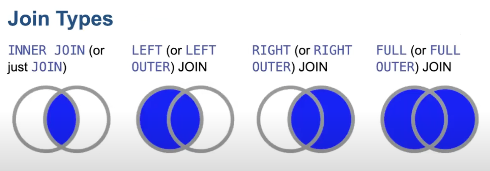

SQL basics
Introduction to SQL
Terminology
- table in the database: as the name suggests
- fields: column names, such as
id - key: the column to match different tables
Sorting ORDER BY
By default, in ascending order (smallest to largest). Or else, use DESC or ASC to clarify.
SELECT *
FROM customers
ORDER BY age DESCText are ordered in alphabetical.
SELECT *
FROM books
ORDER BY title ASC -- alphabetical Limiting data LIMIT, OFFSET
LIMIT Only returns a few. Used in the end.
SELECT *
FROM customers
LIMIT 3OFFSET parameter is used with LIMIT to skip a number of records
SELECT *
FROM customers
LIMIT 3 OFFSET 2 -- returns the 3, 4, 5th recordFiltering WHERE
SELECT name
FROM sales
WHERE year = 2024 -- country = 'USA'Aliases AS
Used to create a new variable
SELECT name, price*delivery AS multiplication
FROM sales
-- for strings, can use concat to combine
SELECT CONCAT(first_name, last_name) AS full_name
FROM employeesPattern matching LIKE %
Wild cards % and _.
'%case%''A_B8', where underscore is one character- mixed:
'A_B%'
SELECT *
FROM comics
WHERE title
LIKE 'The Avengers%' -- used for strings, and case sensitiveUpper and lower cases conversion
/*
Converts strings in the title field to lowercase
*/
SELECT LOWER(title)
FROM movies;
/*
Converts strings in the title field to uppercase
*/
SELECT UPPER(title)
FROM movies;Can be combined like this for case insensitive search
SELECT title
FROM books
WHERE LOWER(title) LIKE '%cooking%'Aggregation MAX, MIN, COUNT, SUM, AVG
SELECT MAX(year)
FROM moviesGrouping GROUP BY
SELECT genre, AVG(budget)
FROM movies
GROUP BY genre;Typically when combining grouping and filtering with WHERE, the filtering happens first. Using HAVING, filter data after grouping
SELECT genre, AVG(budget)
FROM movies
GROUP BY genre
HAVING AVG(budget) > 50;Case
Those do not match the conditions are left empty, unless else is used.
SELECT firstname, lastname,
CASE
WHEN age >= 65 THEN 'senior'
WHEN age >= 25 AND age <65 THEN 'adult'
ELSE 'youth' -- all the others
END AS category
FROM customersChecking data quality
Duplicates
--checking for id duplicates
SELECT id, COUNT(id)
FROM employees
GROUP BY id
HAVING COUNT(id) > 1;Missing, IS NULL, IS NOT NULL
SELECT *
FROM movies
WHERE genre IS NULLMore than one table
Select without joining
This uses WHERE to bind the id
SELECT firstname, lastname, city, number, type
FROM Customers, PhoneNumbers
WHERE Customers.id = PhoneNumbers.customer_idJoin

SELECT ...FROM tab1 JOIN tab2 ON key1 = key2The example above would become
SELECT firstname, lastname, city, number, type
FROM Customers JOIN PhoneNumbers
ON Customers.id = PhoneNumbers.customer_idLeft join combined with alias
SELECT C.firstname, C.lastname, C.city, PN.number, PN.type
FROM Customers AS C LEFT JOIN PhoneNumbers AS PN
ON C.id = PN.customer_idUnion
Combines the results from two SELECT by row, can be considered as rbind. The columns need to be the same from two selects.
SELECT firstname, lastname, age FROM Customers
UNION
SELECT firstname, lastname, age FROM ContactsIt removes the duplicates. UNION ALL keeps the duplicates.
When the columns don’t match, need to create NULL column
SELECT firstname, lastname, age FROM Customers
UNION
SELECT firstname, lastname, NULL FROM ContactsUnion with conditions,
SELECT firstname, lastname, age FROM Customers
WHERE age > 30
UNION
SELECT firstname, lastname, age FROM Contacts
WHERE age < 25Subquery
Find the average for values computed from a middle-step,
SELECT AVG(count) FROM
-- the following computes the count per person, needed for the average final step
(SELECT C.id, COUNT(PN.number) AS count
FROM Customers AS C
LEFT JOIN PhoneNumbers AS PN
ON C.id = PN.customer_id
GROUP BY C.id)
AS NumbersCommon Table Expressions (CTEs)
WITH mytable1 as (
SELECT FROM WHERE....
)
, mytable2 as (
SELECT FROM WHERE....
)
SELECT b.asd, avg(mmm), avg(yyy)
FROM mytable1 as a
LEFT JOIN mytable2 as a
ON b..... = a....
WHERE ...
GROUP BY .... ORDER BY ...
;SELECT b.asd, avg(mmm), avg(yyy)
FROM (
SELECT ...
FROM table1
WHERE ...
GROUP BY mmm
) as a
LEFT JOIN (
SELECT ...
FROM table1
WHERE ...
GROUP BY yyy
) as a
ON b..... = a....
WHERE ...
GROUP BY .... ORDER BY ...Useful functions
String functions
CONCAT: like paste in R, combines two strings as oneUPPER,LOWERSUBSTRING, takes part of the string (e.g. starting from 1st character, up to next 3)REPLACE, replaces certain values
SELECT CONCAT(firstname, '', lastname) AS name
FROM contacts;
SELECT UPPER(name) -- or LOWER
FROM contacts;
SELECT SUBSTRING(names, 1, 3) -- 1st, 2nd, 3rd
FROM contacts
SELECT
firstname,
lastname
REPLACE(city, 'new york', ny) -- only replaces where city matches new york, others remain the same
FROM contactsCan combine functions together
SELECT CONCAT(
SUBSTRING(firstname, 1, 1), -- first character
'. ', -- add a dot
UPPER(lastname)) AS name
FROM Customers Others
Identity
Create a table
CREATE TABLE customers (
id int NOT NULL AUTO_INCREMENT, -- incremental integers
firstname varchar(255),
lastname varchar(255)
)Add new rows, no need to insert id number
INSERT INTO Customers (firstname, lastname, city, age)
VALUES
('demo', 'demo', 'Paris', 52),
('test', 'test', 'London', 21)If need to alter the id, can use ALTER TABLE
Keys
Primary key, uniquely identifies the rows of a table. It must contain unique values, can not have NULL values and one table can only have one primary key.
CREATE TABLE customers (
id int NOT NULL AUTO_INCREMENT, -- incremental integers
firstname varchar(255),
lastname varchar(255),
PRIMARY KEY (id) -- set the key
)Foreign key is a primary key in another table. There can be multiple foreign keys in a table.
CREATE TABLE phonenumbers (
id int NOT NULL AUTO_INCREMENT, -- incremental integers
customer_id int NOT NULL,
type varchar(255),
PRIMARY KEY (id), -- set the key
FOREIGN KEY (customer_id) REFERENCES
customer(id)
)Unique
ALTER TABLE customers
ADD UNIQUE (lastname)Update
Update the patients table for the allergies column. If the patient’s allergies is null then replace it with ‘NKA’
UPDATE patients
SET allergies = 'NKA'
WHERE allergies IS NULL